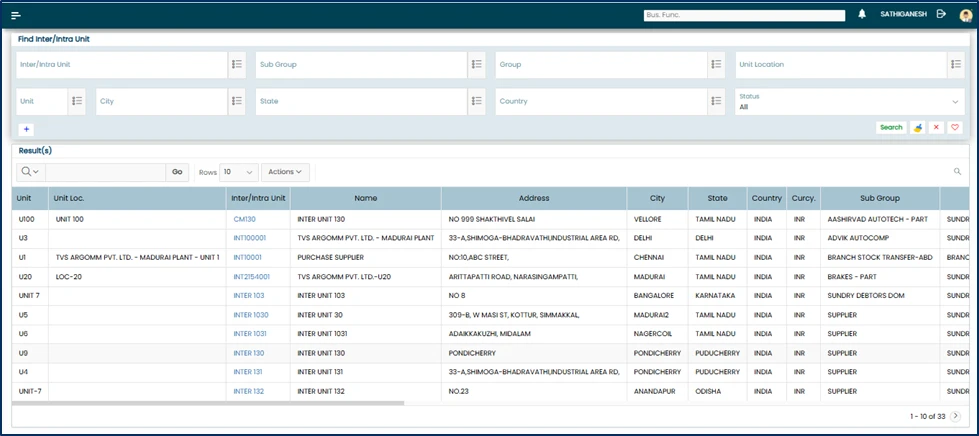
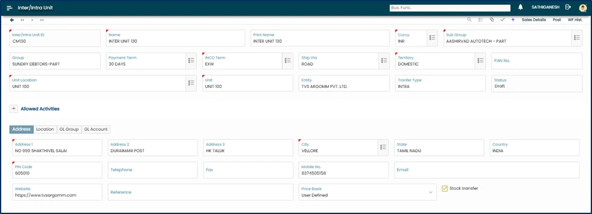
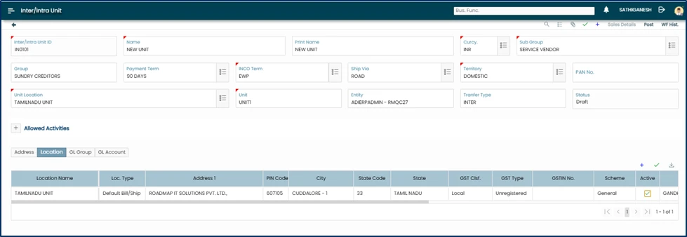
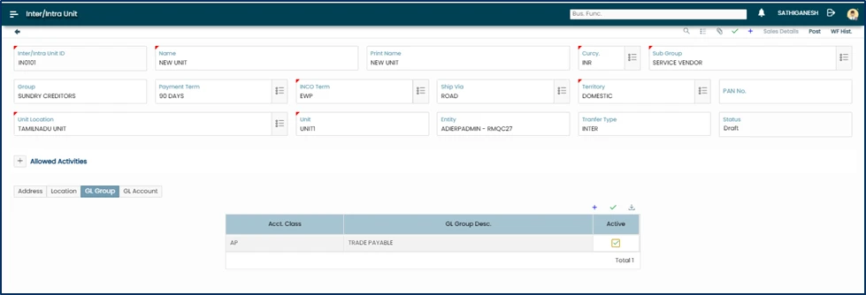
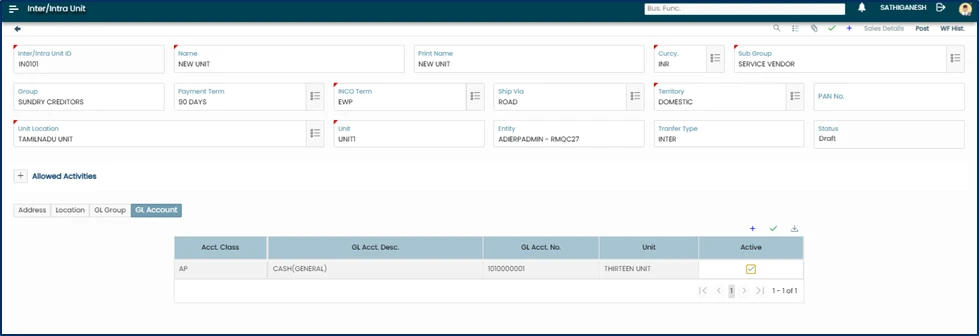
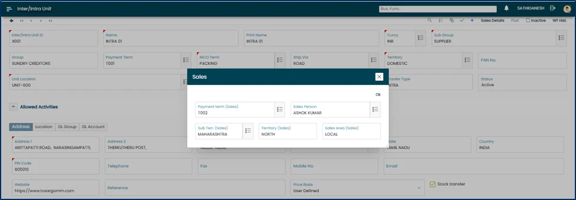
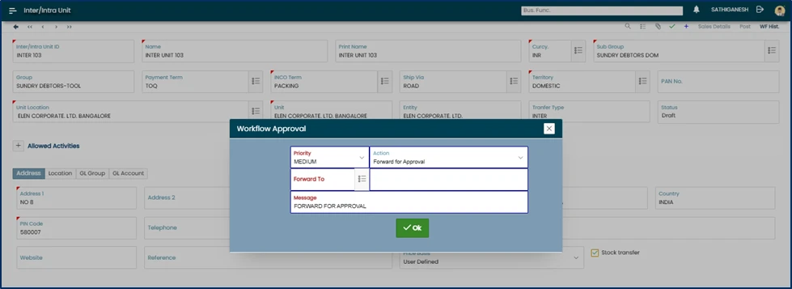

<div data-category="Financials" data-title="Inter/Intra Unit" data-updated="December 01, 2025" data-contributors="RoadmapIT" data-breadcrumb="Home,Financials,Inter/Intra Unit">
  <div class="page-content">
    <p>Within an organization, there are multiple units, and this screen is used to create inter-unit and intra-unit masters for stock transfer purposes.</p>
    <h2>Navigation path</h2>
    <p class="fs-6">Setup \ Inter/Intra Unit</p>
    
    <ul style="list-style-type: none; align-content: center">
      <li class="mouse-icon">Search screen displays the list of Inter/Intra with the relevant details.</li>
      <li class="mouse-icon">Click on search to filter all the records.</li>
      <li class="mouse-icon">User can filter the respective documents by entering the search parameters at the header.</li>
      <li class="mouse-icon">Using search, system displays the results relevant to the search parameters entered.</li>
      <li class="mouse-icon">On-click; the corresponding transaction record will be displayed.</li>
      <li class="mouse-icon">
        Using
        
        icon, entered search parameters can be cleared.
      </li>
      <li class="mouse-icon">
        To close the screen, use
        <i class="bi bi-x fs-4 mx-2 text-danger"></i>
        icon.
      </li>
      <li class="mouse-icon">
        By Clicking the
        <i class="bi bi-plus fs-4 mx-2 text-primary"></i>
        Add button we can create new Inter/Intra Unit.
      </li>
    </ul>
    <h2>Address</h2>
    
    <ul style="list-style-type: none; align-content: center">
      <li class="mouse-icon">Enter/Select the Inter/Intra Unit ID.</li>
      <li class="mouse-icon">Enter the Name.</li>
      <li class="mouse-icon">Select Curcy from LOV.</li>
      <li class="mouse-icon">Select Sub Group from LOV.</li>
      <li class="mouse-icon">Select Payment Term from LOV.</li>
      <li class="mouse-icon">Select INCO Term from LOV.</li>
      <li class="mouse-icon">Select Ship via from LOV.</li>
      <li class="mouse-icon">Select Territory from LOV.</li>
      <li class="mouse-icon">
        Click
        <i class="bi bi-check-lg fs-4 mx-2 text-success"></i>
        to save.
      </li>
      <li class="mouse-icon">Location will be auto populated, if required user can change the details in the specific tab.</li>
    </ul>
    <h2>Location</h2>
    
    <h2>GL Group</h2>
    
    <ul style="list-style-type: none; align-content: center">
      <li class="mouse-icon">
        Click
        <i class="bi bi-plus fs-4 mx-2 text-primary"></i>
        to add GL Group.
      </li>
      <li class="mouse-icon">Select the Acct. Class.</li>
      <li class="mouse-icon">Select the GL Group from LOV.</li>
      <li class="mouse-icon">Enable active checkbox.</li>
      <li class="mouse-icon">
        Click
        <i class="bi bi-check-lg fs-4 mx-2 text-success"></i>
        to save.
      </li>
    </ul>
    <h2>GL Account</h2>
    
    <ul style="list-style-type: none; align-content: center">
      <li class="mouse-icon">
        Click
        <i class="bi bi-plus fs-4 mx-2 text-primary"></i>
        to add GL Account.
      </li>
      <li class="mouse-icon">Select the Acct. Class.</li>
      <li class="mouse-icon">Select the Account from LOV.</li>
      <li class="mouse-icon">
        Click
        <i class="bi bi-check-lg fs-4 mx-2 text-success"></i>
        to save.
      </li>
      <li class="mouse-icon">Click Sales Details button to add the sales details of the associated Unit.</li>
    </ul>
    
    <ul style="list-style-type: none; align-content: center">
      <li class="mouse-icon">Click Post button and the document can be forwarded for approval.</li>
    </ul>
    
    <ul style="list-style-type: none; align-content: center">
      <li class="mouse-icon">Log in Forward user.</li>
      <li class="mouse-icon">
        Click on View details
        <i class="bi bi-info-circle-fill fs-5 text-primary mx-2"></i>
        to view the specific document.
      </li>
      <li class="mouse-icon">Screen navigate into query screen to check the details.</li>
      <li class="mouse-icon">After click the close button document navigate into Approval screen.</li>
      <li class="mouse-icon">Choose the Approval/forward/Return button field and click Process button required process performed.</li>
    </ul>
  </div>
</div>
